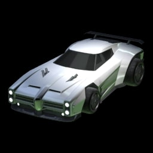
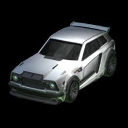

Les voitures emblématiques
Dans Rocket League, les voitures possèdent des hitbox différentes qui influencent la manière de jouer. Même si leurs statistiques sont similaires, leur forme change la précision des tirs et des contrôles.
Octane

L’Octane est la voiture la plus populaire du jeu. Elle est très utilisée en compétition grâce à sa polyvalence.
Dominus
La Dominus est connue pour ses tirs puissants et sa forme allongée, idéale pour les joueurs offensifs.
Fennec
La Fennec possède une hitbox très précise et est très appréciée par les joueurs professionnels.